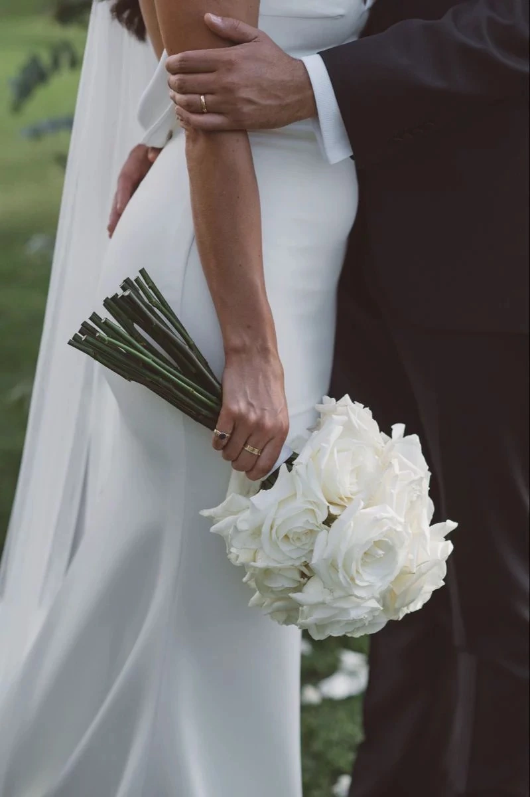
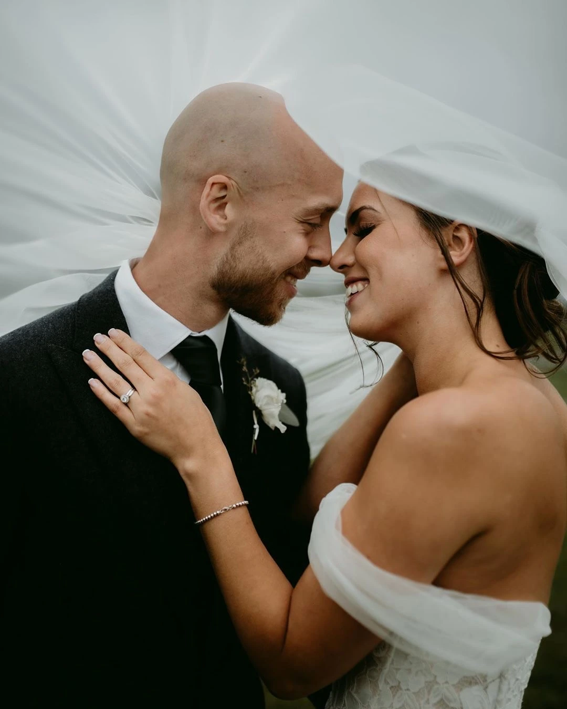
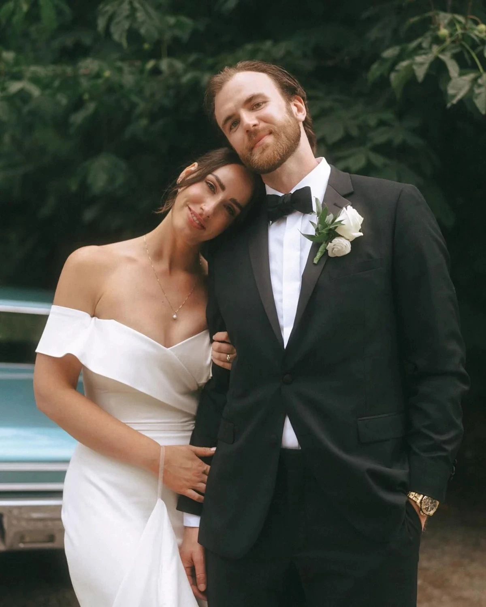
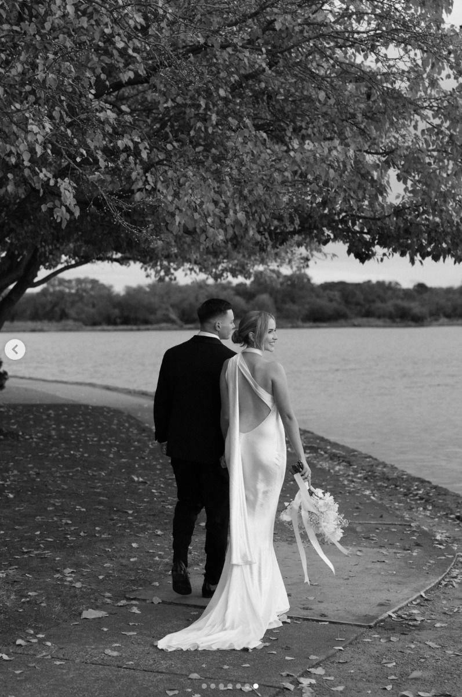
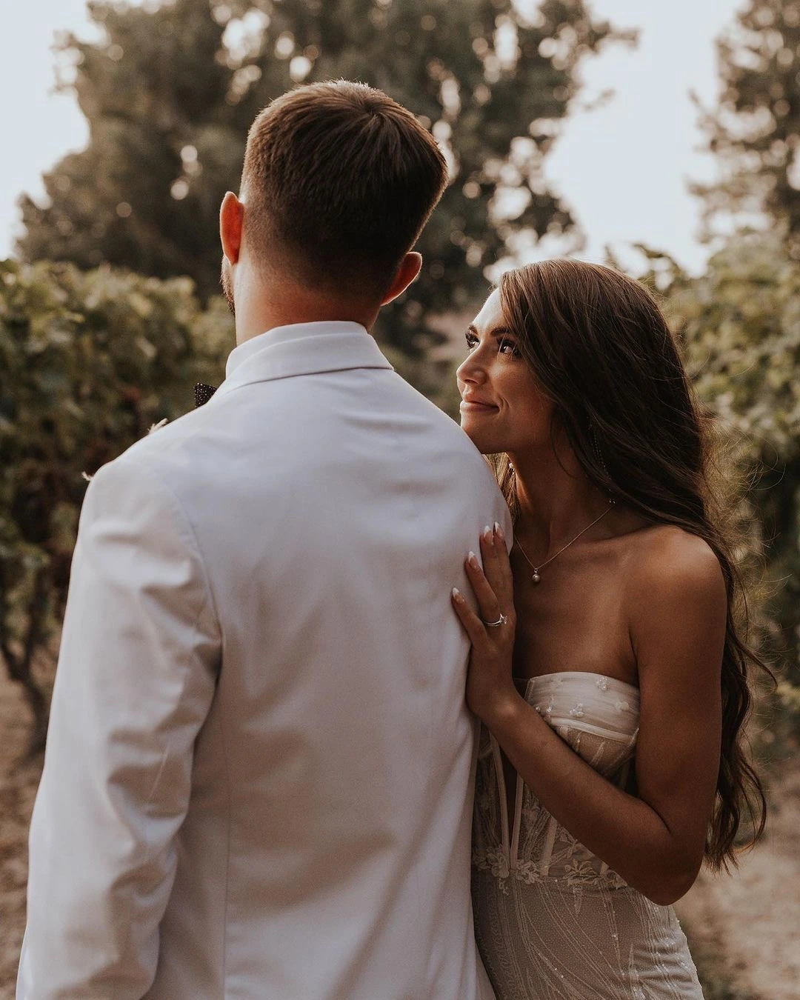
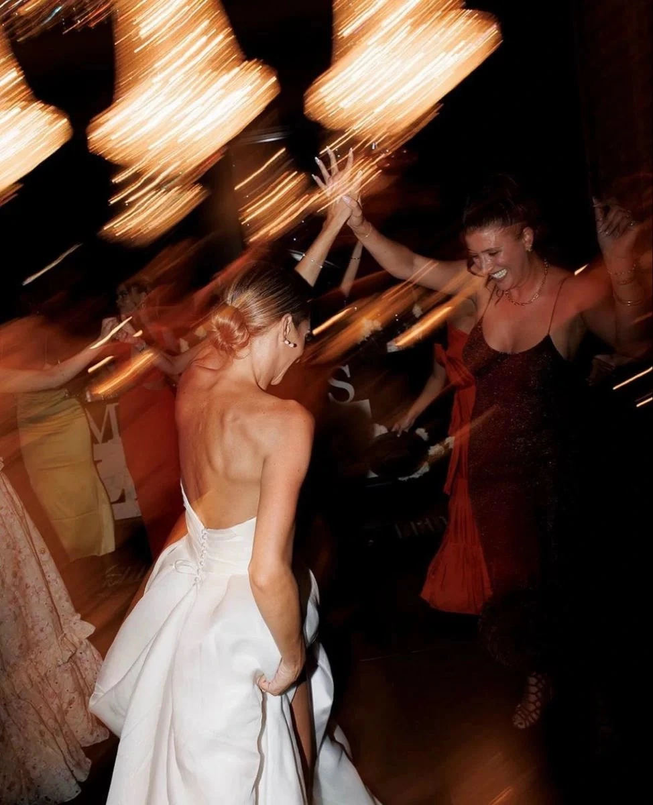
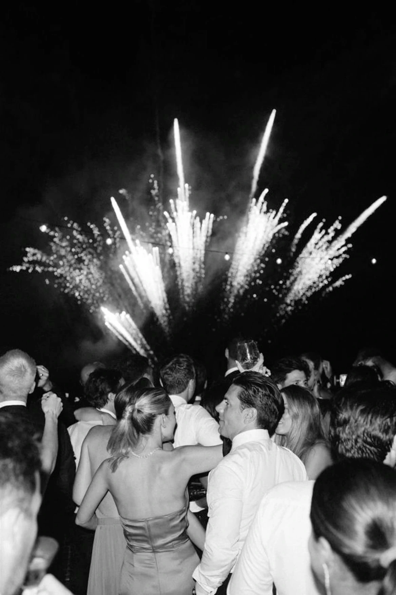
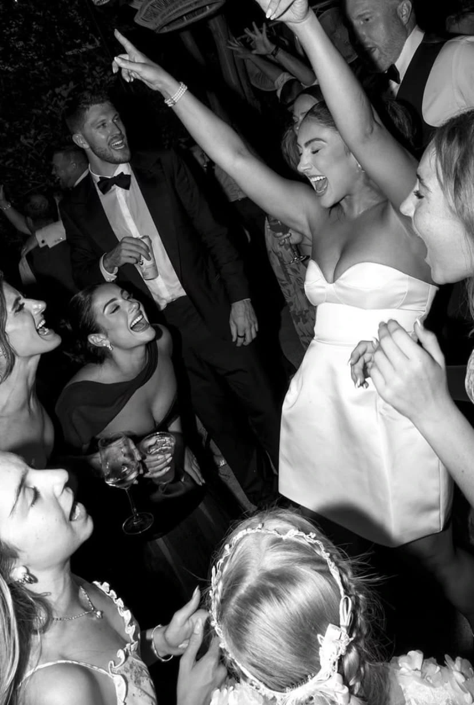
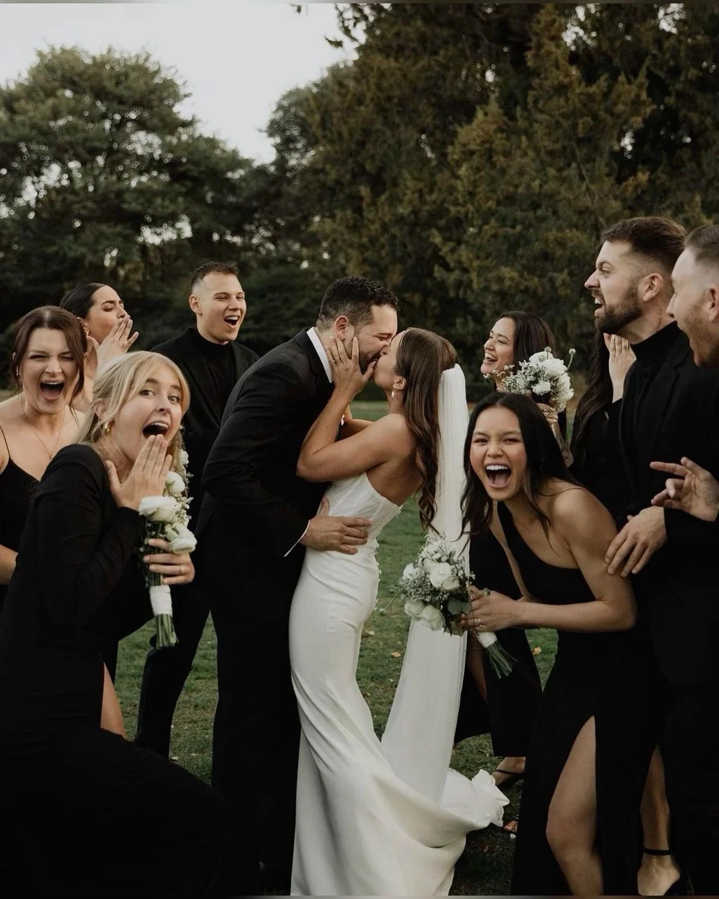
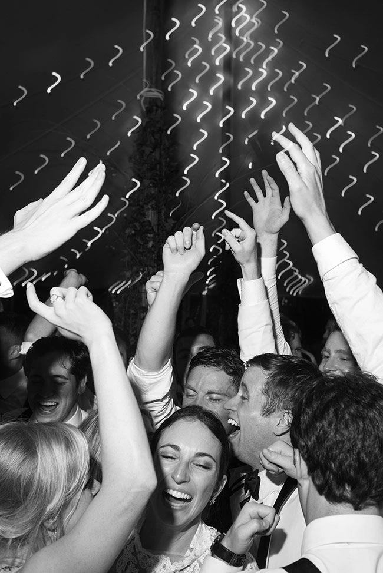

01 — Priprema
Pre nego što sve počne
Tiha soba, šolja kafe u ruci, haljina koja čeka. Trenuci iščekivanja — nervoza i uzbuđenje pomešani u jedno. Ovo su kadrovi koji pričaju priču pre same priče.




Vaš dan, vaša priča
Svako venčanje ima svoj ritam, svoju paletu boja, svoje male trenutke koji se ne ponavljaju. Ovo je vizuelni putokaz — kadrovi, atmosfera i emocije koje zajedno možemo da uhvatimo za vaš dan.
01 — Priprema
Tiha soba, šolja kafe u ruci, haljina koja čeka. Trenuci iščekivanja — nervoza i uzbuđenje pomešani u jedno. Ovo su kadrovi koji pričaju priču pre same priče.


Najtiši trenuci često pričaju najglasnije priče.
02 — Obred
Pogled koji izmenjujete pred oltarom. Drhtaj u glasu kad izgovarate zakletvu. Dlan u dlanu. Suze sreće u oku nečiji bliski. Ovo su kadrovi koji se gledaju za 30 godina.



03 — Detalji koji čine dan
Prsten na jastuku, cveće u rukama, mama koja poravnjava veo. Detalji se često ne pamte u trenutku, ali su oni ti koji kasnije vraćaju osećaj tog dana nazad.



04 — Portreti mladenaca
Kada se povučemo na stranu, iz žurbe dana, i pustimo svetlo da radi svoje. Vaša geografija — pogled, dodir, osmeh samo njemu/njoj. Neretirana intima pred objektivom.


Ne fotografišem venčanja. Pamtim ih u vaše ime.
05 — Zlatni čas
Pola sata pre zalaska — ono kada sve izgleda kao iz filma. Ako vaša lokacija i raspored dozvole, rezervišemo baš taj prozor za portret-setup koji će biti uvodna slika vašeg albuma.


06 — Emocije i gosti
Baka koja briše oko. Otac koji izgovara zdravicu sa knedlom u grlu. Kuma koja se smeje do suza. Ovo su kadrovi za koje gosti kažu "nisam ni primetio da me fotografišeš" — i to je cela poenta.




07 — Prvi ples & slavlje
Sve što se dogodilo do sada bilo je preludijum. Prvi ples, upaljene sveće, odlazak podijuma u ludilo. Mešavina filmskog svetla, svadbenih bengalski vatri i emocije koja se ne gasi do jutra.


Hajde da se upoznamo
Ako vas je nešto od ovoga dotaklo — javite mi se. Popijemo kafu (uživo ili online), popričamo o vašem danu, o lokaciji, o stilu koji vi volite. Bez obaveze, bez pritiska.